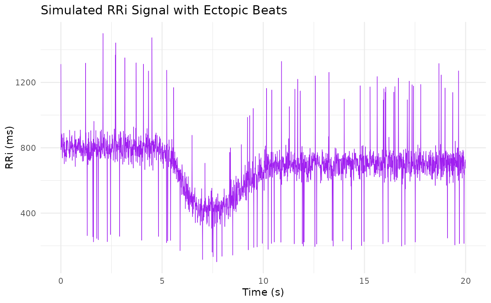

A data frame containing a simulated RR interval (RRi) signal generated using the dual-logistic model as described by Castillo-Aguilar et al. (2025). The data are produced by first computing a theoretical RRi curve based on specified model parameters, then adding Gaussian noise to mimic natural variability, and finally introducing ectopic beats by modifying 5% of the data points (multiplying by a factor of 0.3 or 1.7). This simulated dataset is intended for demonstrating and testing the preprocessing and modeling functions provided in the CardioCurveR package.
Format
A data frame with n rows and 2 variables:
- time
A numeric vector of time points (in seconds).
- RRi_simulated
A numeric vector of simulated RR interval values (in milliseconds), including added noise and simulated ectopic beats.
Details
The dual-logistic model is defined as:
$$ RRi(t) = \alpha + \frac{\beta}{1 + \exp\{\lambda (t - \tau)\}} - \frac{c \, \beta}{1 + \exp\{\phi (t - \tau - \delta)\}}, $$
where \(\alpha\) is the baseline RRi level, \(\beta\) controls the amplitude of the drop, \(\lambda\) and \(\tau\) define the drop phase, and \(c\), \(\phi\), and \(\delta\) govern the recovery.
References
Castillo-Aguilar, et al. (2025). Enhancing Cardiovascular Monitoring: A Non-linear Model for Characterizing RR Interval Fluctuations in Exercise and Recovery. Scientific Reports, 15(1), 8628.
Examples
data(sim_RRi)
head(sim_RRi)
#> time RRi_simulated
#> 1 0.00 1312.3596
#> 2 0.01 788.4911
#> 3 0.02 877.9354
#> 4 0.03 803.5254
#> 5 0.04 806.4644
#> 6 0.05 885.7532
plot(sim_RRi$time, sim_RRi$RRi_simulated, type = "l",
xlab = "Time (s)", ylab = "RR Interval (ms)",
main = "Simulated RRi Signal with Ectopic Beats")
